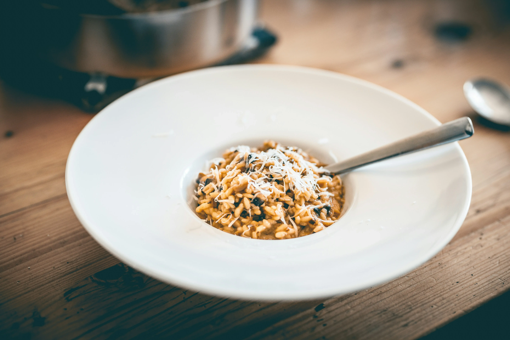

Creamy Vegan Mushroom Risotto

This Creamy Vegan Mushroom Risotto is a comforting, elegant dish that's surprisingly easy to make.
It features creamy arborio rice and a medley of sautéed mushrooms, perfect for a cozy dinner
Ingredients:
- 2 tablespoons olive oil
- 1 onion, finely chopped
- 2 garlic cloves, minced
- 1 1/2 cups arborio rice
- 1/2 cup white wine (optional)
- 4 cups vegetable broth, kept warm
- 2 cups mixed mushrooms, sliced (such as cremini, shiitake, and oyster)
- 1/2 cup nutritional yeast
- 2 tablespoons vegan butter
- Salt and pepper to taste
- Fresh parsley for garnish
Instructions:
-
Heat the olive oil in a large skillet over medium heat. Add the onion and cook until soft, about 5 minutes.
-
Stir in the garlic and cook for another minute. Add the arborio rice and toast for 2-3 minutes,
stirring frequently.
-
Pour in the white wine, if using, and cook until it's mostly absorbed.
-
Begin adding the warm vegetable broth, one ladle at a time, stirring constantly. Allow the liquid to
be absorbed before adding more. This process should take about 20-25 minutes until the rice is creamy and
al dente.
-
In a separate pan, sauté the mushrooms in a bit of olive oil until they release their juices and become tender.
-
Stir the cooked mushrooms, nutritional yeast, and vegan butter into the risotto. Season with salt and
pepper to taste.
-
Garnish with fresh parsley and serve hot.
This Vegan Mushroom Risotto is rich, creamy, and full of earthy flavors. It's a delightful dish that feels
luxurious yet is simple enough for a weeknight dinner.
Go Back to find more awesome recipes!